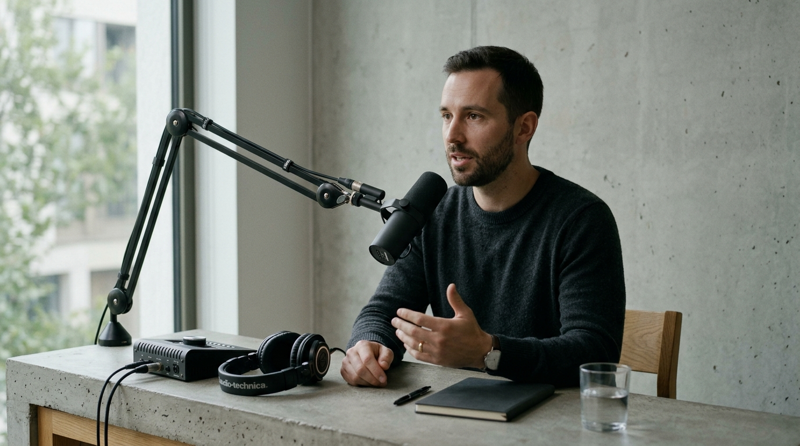

Cut, auto-tune, and batch-export video locally in your browser.
Slicemark slices long recordings into 15s, 30s, 45s, or 60s clips, excises silent pauses, balances exposure and vocal clarity with AI Auto-Tune, and exports lossless MP4s or ZIP packs without uploading a single megabyte of footage.
Slice by duration, file size, silence, or scene cuts.
Batch-split recordings by exact interval (15s, 30s, 45s, 60s+), equal part count, WhatsApp 16 MB or Discord 10 MB file size targets, silence jump-cut detection, visual scene changes, or pasted YouTube chapter lists.

Auto-Tuned Original RawOne-click color, sharpening, denoise, and vocal mastering.
Slicemark samples keyframes and audio loudness telemetry from your video and calibrates
real FFmpeg filters—eq, unsharp, hqdn3d,
acompressor, and dynaudnorm—with an instant Before / After
Compare Original button inside the viewport.
Reframe widescreen video for Reels, Shorts, and Square feeds.
Switch between 9:16, 1:1, 4:5, and 16:9 using draggable Crop Fill, synchronized Blurred Video Backdrops, or Solid Mattes. Add automatic Part 1/N stamps, PNG/SVG logos, and burned-in SRT/VTT subtitles.
Everything shipped in Slicemark.
Cutting & Auto-Split
- — Auto-split by interval (15s, 30s, 45s, 60s, or custom)
- — Split by equal part count or target size (10 MB / 16 MB)
- — Fixed-length sliding trim window & remove-middle stitch
- — Silence jump-cut detection & visual scene-change detection
- — YouTube chapter timestamp import & undo/redo history
AI Video Auto-Tune
- — Samples 6 keyframes + audio loudness & quiet-ratio stats
- — 5 tuned style goals plus optional custom direction prompt
- — Auto-calibrates brightness, contrast, saturation, sharpen & denoise
- — Auto-configures vocal EQ, loudness normalize & fades
- — Instant Before / After Compare Original viewport toggle
Framing, Overlays & Captions
- — 9:16, 1:1, 4:5, 16:9 presets with draggable crop reticle
- — Crop Fill, Blurred Video Backdrop & Solid Color Matte
- — Rotation, horizontal flip, video fades & PNG frame snapshots
- — Auto Part 1/N stamps, watermarks & PNG/SVG logo overlays
- — SRT / VTT import, live preview, burn-in & sliced ZIP export
Audio, Export & Offline PWA
- — Voice Clarity EQ (80Hz highpass, 13kHz lowpass, compressor)
- — Dynamic loudness normalize (dynaudnorm) & background music mix
- — Playback speed (0.5x–2x), Reverse & Boomerang loop motion
- — Lossless MP4 copy, WebM, GIF, MP3, WAV & Highlight Reel Merge
- — Installable Android PWA with cached offline FFmpeg.wasm